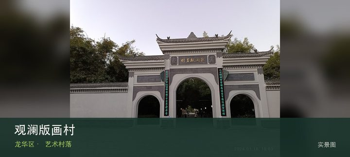
授权实景图观澜版画村
观澜版画村位于观澜牛湖大水田村，客家老村、版画工坊、驻留空间和田野共同构成创作基地，工作室是否开放取决于活动而非每天固定…
DISTRICT GUIDE · 30 PLACES
版画、古墟、时尚产业与城郊绿道，是深圳北部最有层次的文化组合。
SMALL PICKS
鳌湖艺术村、上围艺术村与大浪时尚小镇都不是传统景区，展览和工作室开放受活动影响。
ALL PLACES

授权实景图观澜版画村位于观澜牛湖大水田村，客家老村、版画工坊、驻留空间和田野共同构成创作基地，工作室是否开放取决于活动而非每天固定…
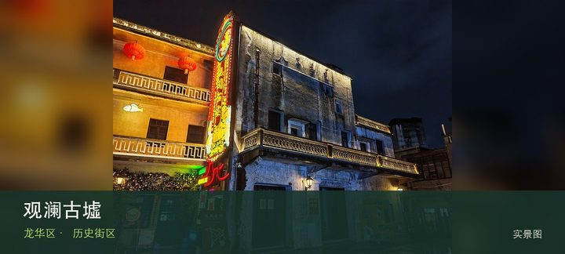
授权实景图观澜古墟位于观澜老街，骑楼、古寺、会馆和沿河商业街记录北部墟市传统，更新后的展陈与节庆使历史空间继续被使用。现场的空间线…
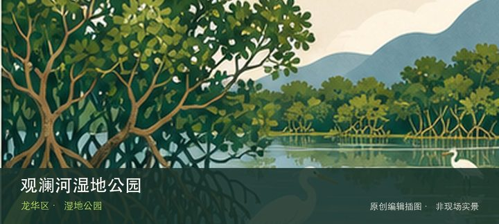
编辑配图·非现场实景观澜河湿地公园位于观澜河沿线，河流修复、湿地植物和社区慢行空间展示工业化城区如何重新建立水生态，适合分段观察而非追求全线…
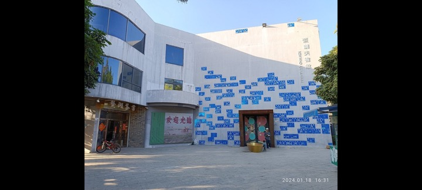
编辑配图·非现场实景鳌湖艺术村位于观澜鳌湖社区，壁画、村屋和艺术家工作室散落在真实社区中，公共可见作品与私人创作空间必须分清。与同类地点相比…
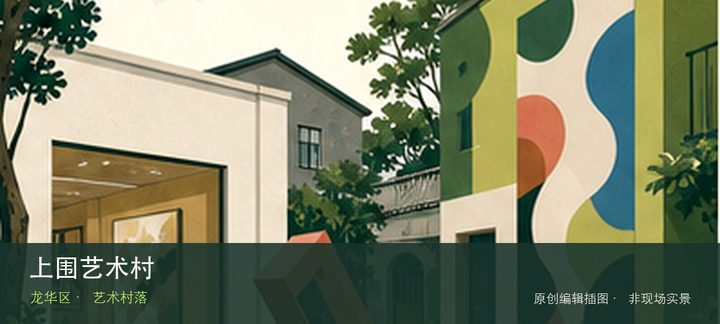
编辑配图·非现场实景上围艺术村位于观湖上围社区，旧村更新将公共艺术、展览和创意工作室嵌入居民区，开放强度随项目周期变化，安静时仍可看空间改造…
大浪时尚小镇位于大浪服装产业集聚区，品牌总部、设计建筑、展馆和秀场把服装生产升级为时尚产业街区，活动日与普通工作日体验差…
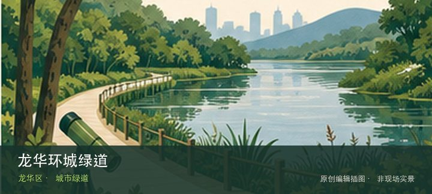
编辑配图·非现场实景龙华环城绿道位于龙华多街道山体与社区，多个分段连接森林、郊野径、水库和居民区，线路名称覆盖范围很大，入口与退出点比里程目…
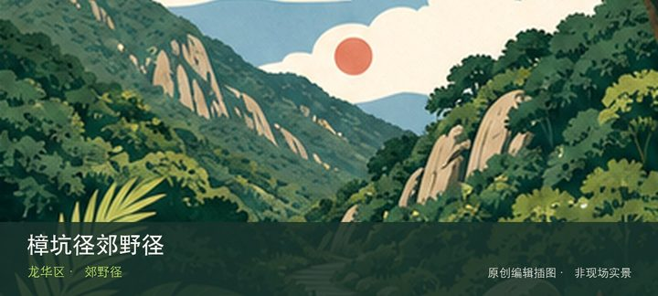
编辑配图·非现场实景樟坑径郊野径位于民治北侧，新整理的郊野径借山林、社区水库边缘和标识步道提供短线自然体验，施工或养护变化需服从现场。先辨认…
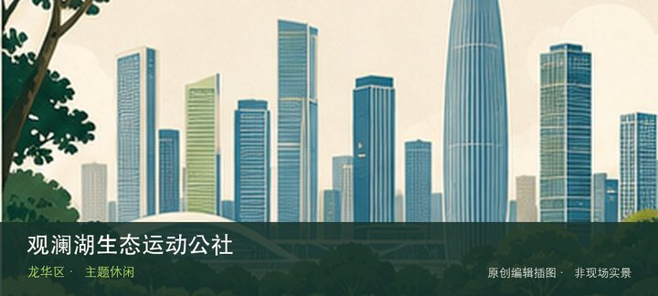
编辑配图·非现场实景观澜湖生态运动公社位于观澜，运动、农场、游乐和节庆项目按商业景区运营，免费区域、收费设施和活动票种需要分别确认。把注意力…
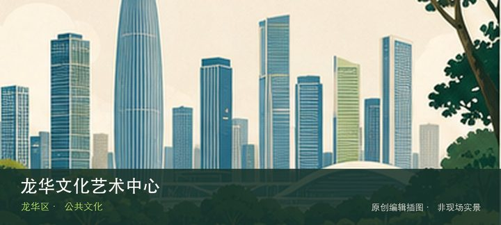
编辑配图·非现场实景龙华文化艺术中心位于龙华中心区，图书、文化活动和望野博物馆等设施集中在同一公共建筑群，是高温雨天切换多个室内内容的便利节…
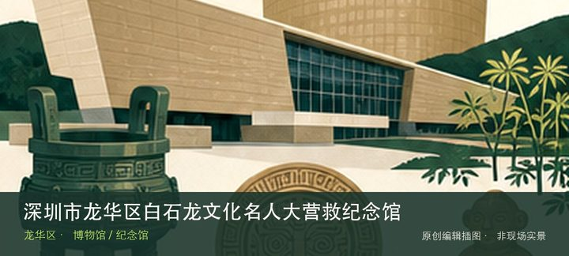
编辑配图·非现场实景深圳市龙华区白石龙文化名人大营救纪念馆位于白石龙老村，以抗战时期文化名人大营救和白石龙秘密交通线为核心，将国家历史落到具…
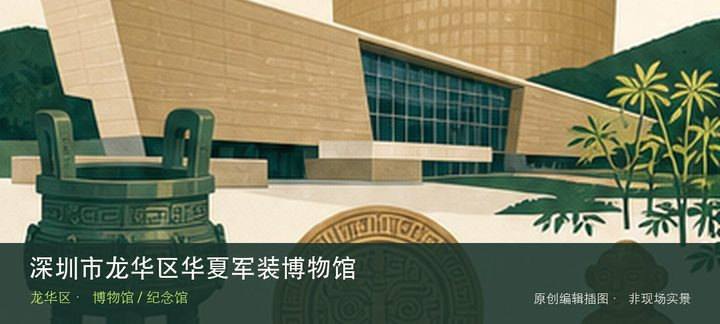
编辑配图·非现场实景深圳市龙华区华夏军装博物馆位于大浪，军装形制、徽章与不同历史时期的制度变化构成小众专题，工作日预约和机构门禁是实际参观前…
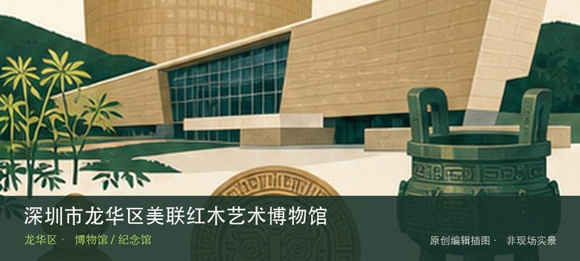
编辑配图·非现场实景深圳市龙华区美联红木艺术博物馆位于观澜，依托红木企业展示木材种类、雕刻、榫卯和家具陈设，更偏工艺与产业流程而非单纯古董收…
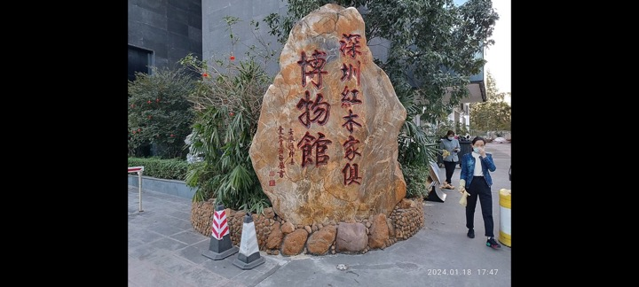
编辑配图·非现场实景深圳红木家具博物馆位于观澜，以红木家具形制、空间陈设和传统生活礼仪为核心，可与美联馆的产业工艺线形成收藏与制造对照。与同…
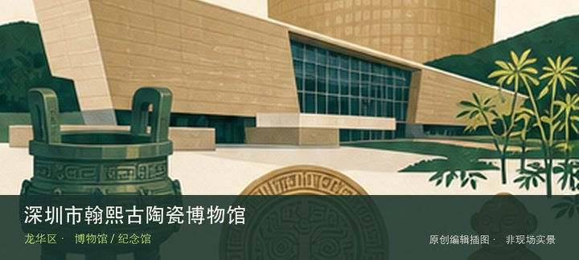
编辑配图·非现场实景深圳市翰熙古陶瓷博物馆位于民治，古陶瓷的窑口、胎釉、纹饰与修复痕迹是主要线索，适合用少量器物建立断代与工艺比较。现场的空…
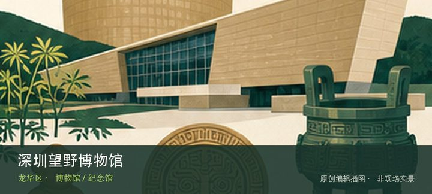
编辑配图·非现场实景深圳望野博物馆位于龙华文化艺术中心，以中国古代艺术与考古器物收藏见长，公共文化中心的新馆环境让民办收藏获得更完整的展陈条…
深圳市艺之卉百年时尚博物馆位于大浪时尚小镇，服装、面料、版型和品牌档案串联百年时尚变化，与小镇当代产业现场形成历史和生产…
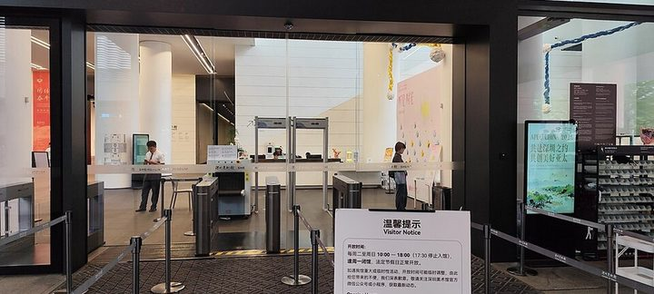
授权实景图深圳美术馆（新馆）位于红山，大尺度新馆承担深圳美术收藏、研究与大型展览，建筑和多展厅动线与东湖老馆形成鲜明代际对照。把注…
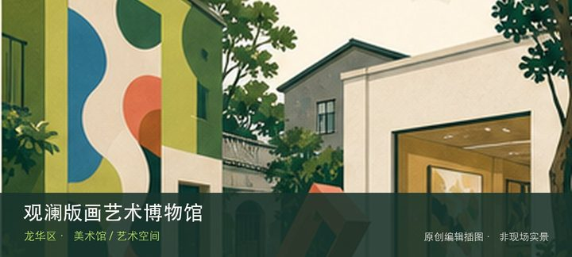
编辑配图·非现场实景观澜版画艺术博物馆位于观澜版画基地，专业版画博物馆从木刻、铜版、丝网到当代实验展示媒介特性，是理解旁边版画村生产过程的室…
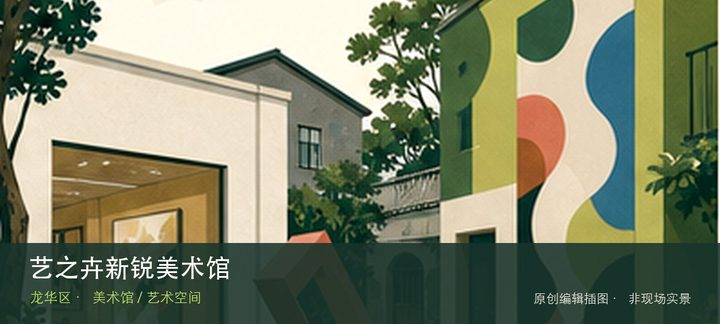
编辑配图·非现场实景艺之卉新锐美术馆位于大浪时尚小镇，展览常连接年轻艺术、时尚与设计实验，企业园区内的开放日和展期比传统美术馆更不稳定。现场…
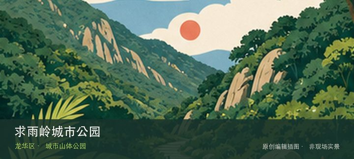
编辑配图·非现场实景求雨岭城市公园位于观澜街道牛湖社区启明街旁，三十公顷级山体公园与牛湖老村、版画基地相邻，可用低强度登高补充观澜文化路线。…
深圳北站中心公园位于民治街道致远中路西侧，北站枢纽旁的城市公园以大草坪、起伏地形和交通建筑视野提供换乘前后的短时休息。从…
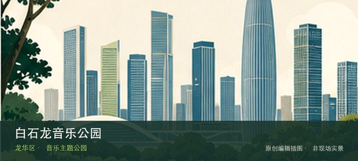
编辑配图·非现场实景白石龙音乐公园位于民治街道金龙路与新区大道之间，近12公顷主题公园以音乐装置、草坪和白石龙社区文化记忆构成亲子与夜间慢行…
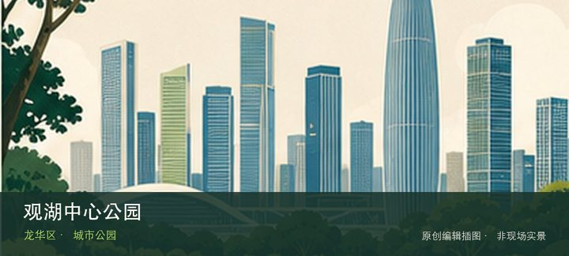
编辑配图·非现场实景观湖中心公园位于观湖街道观盛二路与观盛三路之间，近12公顷公园服务观湖产业片区，以缓坡草地、林荫与公共活动空间连接办公和…
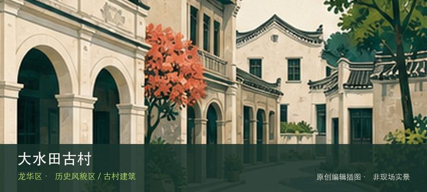
编辑配图·非现场实景大水田古村位于观澜街道大水田社区，首批历史风貌区以客家旧村、碉楼和传统街巷呈现观澜河谷聚落的生活尺度。先辨认大水田古村旧…
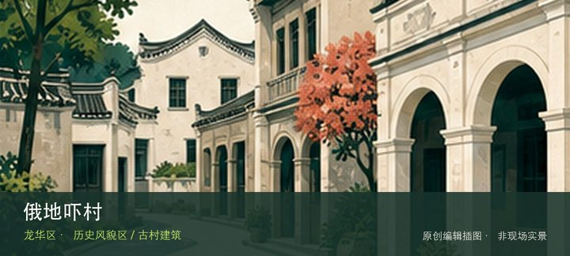
编辑配图·非现场实景俄地吓村位于观湖街道俄地吓片区，传统客家村落在城市更新背景下仍保留旧巷、围屋和社区公共空间线索。先辨认俄地吓旧村街巷，再…
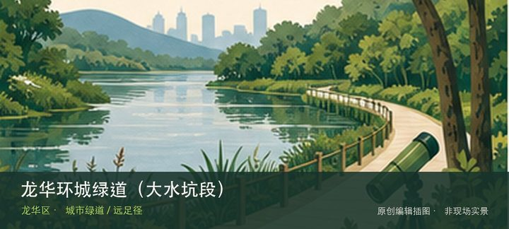
编辑配图·非现场实景龙华环城绿道（大水坑段）位于大水坑社区桔美路至省立绿道5号线，约4.6公里线路通常06:00—21:30开放，以星空夜光…
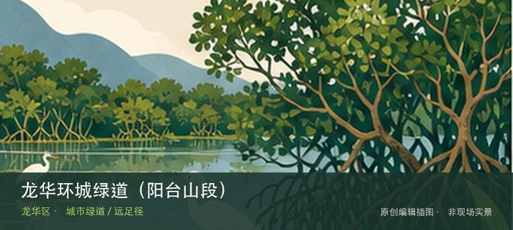
编辑配图·非现场实景龙华环城绿道（阳台山段）位于石凹水库至部九窝绿谷公园段，约27.9公里的长距离山地段通常06:00—21:30开放，串联…
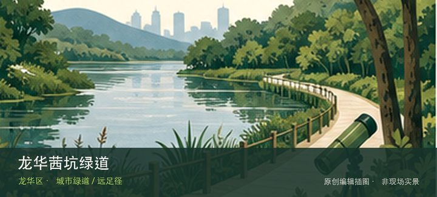
编辑配图·非现场实景龙华茜坑绿道位于观澜街道至茜坑老村，约7.02公里郊野绿道沿茜坑水库和荔林展开，兼具轻徒步、骑行与村落水库视野。把注意力…
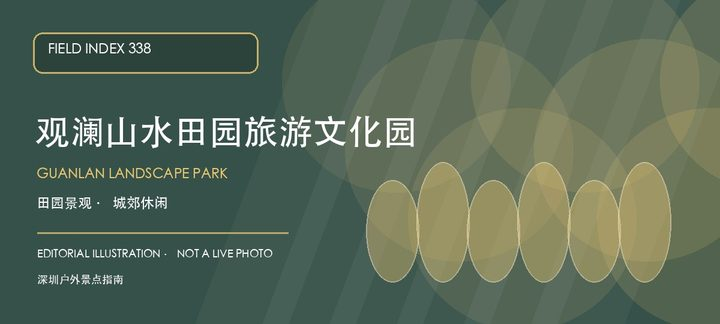
编辑配图·非现场实景观澜山水田园旅游文化园位于龙华北部观澜片区，以田园景观、休闲度假和户外活动构成一处城郊型旅游景区。它更适合按季节、同行者…